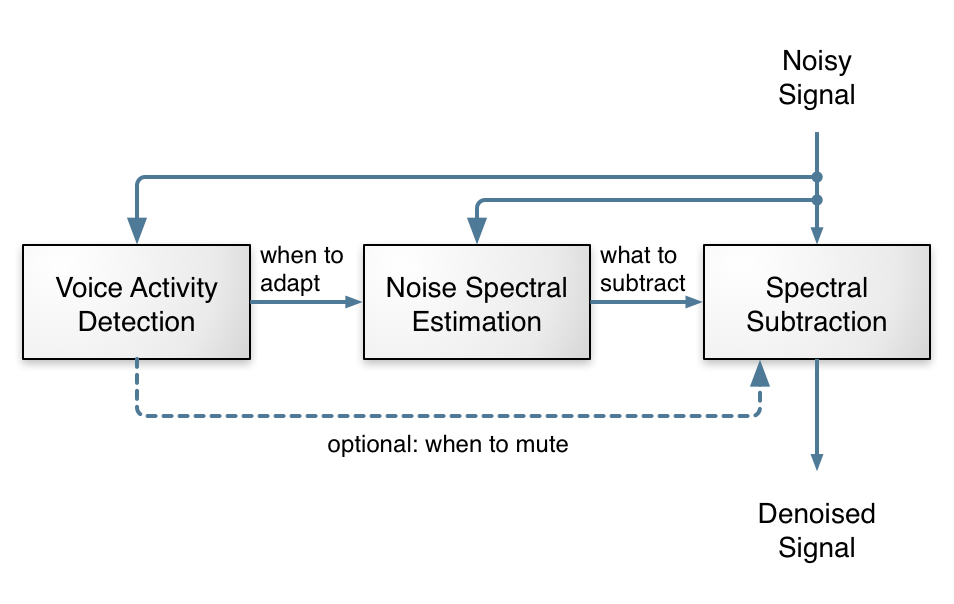

Noise suppression is a pretty old topic in speech processing, dating back to at least the 70s. As the name implies, the idea is to take a noisy signal and remove as much noise as possible while causing minimum distortion to the speech of interest.
We went with a different approach here: keep all the basic signal processing that's needed anyway (not have a neural network attempt to emulate it), but let the neural network learn all the tricky parts that require endless tweaking next to the signal processing. Another thing that's different from some existing work on noise suppression with deep learning is that we're targeting real-time communication rather than speech recognition, so we can't afford to look ahead more than a few milliseconds (in this case 10 ms).
To avoid having a very large number of outputs — and thus a large number of neurons — we decided against working directly with samples or with a spectrum. Instead, we consider frequency bands that follow the Bark scale, a frequency scale that matches how we perceive sounds. We use a total of 22 bands, instead of the 480 (complex) spectral values we would otherwise have to consider.

Of course, we cannot reconstruct audio from just the energy in 22 bands. What we can do though, is compute a gain to apply to the signal for each of these bands. You can think about it as using a 22-band equalizer and rapidly changing the level of each band so as to attenuate the noise, but let the signal through.
In addition to our cepstral coefficients, we also include:
That makes a total of 42 input features to the neural network.
The deep architecture we use is inspired from the traditional approach to noise suppression. Most of the work is done by 3 GRU layers. The figure below shows the layers we use to compute the band gains and how the architecture maps to the traditional steps in noise suppression. Of course, as is often the case with neural networks we have no actual proof that the network is using its layers as we intend, but the fact that the topology works better than others we tried makes it reasonable to think it is behaving as we designed it.

The algorithm runs in real-time but we've purposely delayed it by a few seconds to make it easier to hear the denoised output. Make sure to wear headphones otherwise you'll hear a feedback loop. To start the demo, select either "No suppression" or "RNNoise". You can toggle between the two to see the effect of the suppression. If your input doesn't have enough noise, you can artificially add some by clicking the "white noise" button.
Suppression algorithm
Noise type